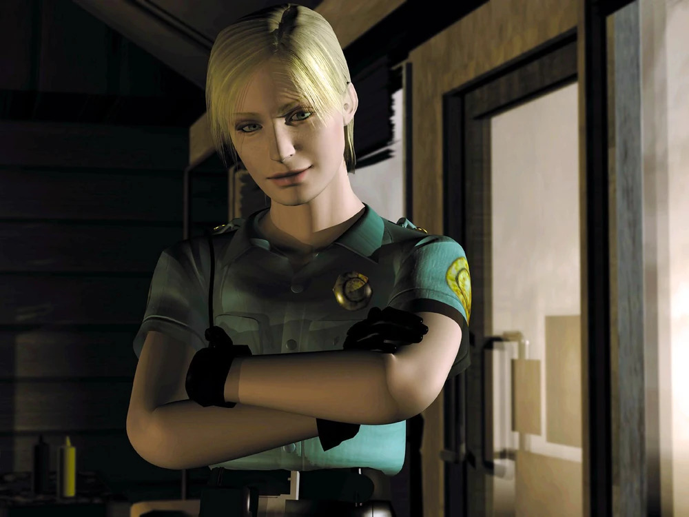
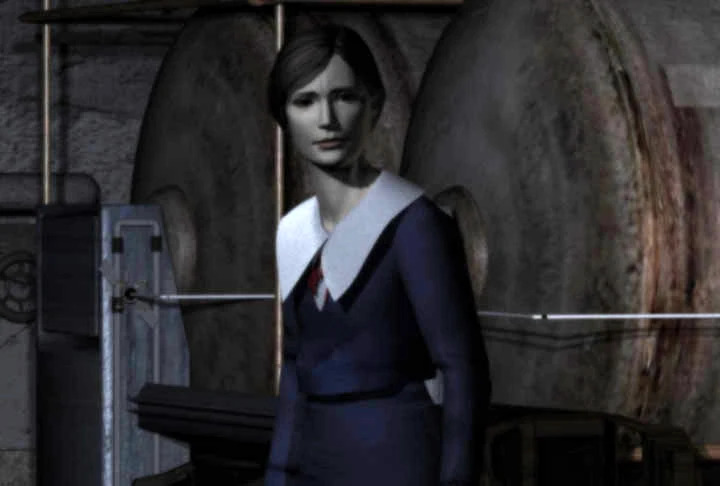

Trama
Colina Silenciosa, Maine, es una tranquila ciudad turística estadounidense conocida por su ambiente muy tranquilo, pero con recuerdos de una época trágica casa incendio hace siete años, en el que una niña nombró Alessa Gillespie "murió", todavía persigue a la ciudad y a los habitantes del pueblo. Habiendo tenido a su esposa Jodie murió de una enfermedad hace cuatro años, Harry Mason es padre soltero con una hija adoptiva llamada Cheryl. Harry todavía está afligido por la muerte de Jodie y, para ayudar a su estado mental, Cheryl le ruega que se tome unas relajantes vacaciones en la ciudad turística de Silent Hill, y Harry cede.
Debido a problemas con el coche, Harry y Cheryl llegan a las afueras de Silent Hill por la noche, siguiendo la sinuosa carretera de la ladera de la montaña. Mientras conduce por las afueras de la ciudad, Harry ve a una niña (una proyección astral) cruzando la calle. Harry desvía su auto para evitar golpearla y queda inconsciente por el accidente automovilístico resultante.
Harry se despierta más tarde y descubre que Cheryl ha desaparecido y se ve obligada a aventurarse en la nieve ciudad cubierta de niebla para rescatarla. A primera vista, Harry nota que todo el lugar, o al menos Vieja colina silenciosa, parece estar abandonado. Harry abandona el área para mirar a su alrededor y ve a Cheryl huyendo, e inmediatamente se apresura a seguirla. Persiguiéndola por las calles de Silent Hill, se encuentra corriendo por una pequeña calle residencial y hacia un callejón oscuro.
El cielo de repente se oscurece, a sirena suena a lo lejos, y cuando Harry ilumina el área con un encendedor, descubre que todo su entorno se ha transformado en un reino más oscuro. El pavimento de la carretera ha sido reemplazado por rejillas y plataformas metálicas oxidadas, y las paredes son una serie oscura y sucia de cercas de malla y eslabones de cadena. Todo está cubierto de óxido y sangre, cubierto con alambre de púas, y detrás de la malla se pueden distinguir las formas de los cuerpos colgantes. Los sonidos del ruido metálico industrial y del chirrido forman una cacofonía constante de ruido ambiental. Sin ningún lugar adonde ir, Harry sigue el callejón y encuentra el inquietante cuerpo de un cadáver mutilado colgado en valla frente a él. Momentos después, es atacado por monstruos pequeños y infantiles, y a pesar de sus mejores esfuerzos, Harry finalmente se siente abrumado y "asesinado".

Se despierta en un restaurante desierto llamado Café 5to2. Un oficial nombrado Cybil Bennett Desde el pueblo cercano Brahms aparece y, después de una breve conversación, ella le proporciona un pistola y se va a buscar ayuda. En el restaurante, Harry se arma con un mapa, a cuchillo, y a linterna. Mientras Harry intenta salir del restaurante, un radio en una mesa cercana comienza a emitir estática, lo que hace que Harry lo investigue. A criatura voladora se estrella contra una ventana y entra en la tienda y ataca a Harry. Harry derrota al monstruo con su pistola y permanece allí incrédulo por un momento antes de salir del restaurante. Harry pronto se encuentra con otros monstruos en las calles brumosas y rápidamente descubre la utilidad de la radio cuando emite una estática cada vez más intensa a medida que los monstruos se acercan. Siguiendo a pista abandonado por su hija, Harry finalmente encuentra el camino a Escuela primaria Midwich para buscarla.
Desde su inspección inicial, la escuela hace tiempo que está desierta. En lugar de estudiantes y profesores, Harry encuentra muchos niños grises o Mumblers. Se abre camino y finalmente desbloquea la torre del reloj en el patio de la escuela. Al llegar al otro lado de las instalaciones frente a él, se sorprende al descubrir que el mundo se ha trasladado una vez más al Otro Mundo. Una vez más, la luz que ya disminuye se reduce a nada más de lo que la linterna de Harry puede producir, y todas las superficies han experimentado un aterrador regreso a la rejilla metálica y las plataformas desiguales. En la escuela del Otro Mundo, Harry viaja a la sala de calderas. En el interior, un cadáver en llamas arroja luz, iluminando a una criatura conocida como Cabeza dividida– un gran lagarto con la cabeza partida por la mitad. Con su derrota, todo se convierte en oscuridad, y luego la luz regresa para revelar una sala de calderas ordinaria. Una niña, Alessa Gillespie, está apoyada contra la caldera y se vuelve hacia Harry antes de desaparecer en el aire.
Confundido, Harry sale de la escuela. Oye una campana de iglesia sonando a lo lejos y se dirige a la Iglesia de los Balcanes, donde ve un mujer orando en un altar. Ella se gira para encontrarse con Harry y, en una conversación que él tiene dificultades para comprender, ella se revela como Dahlia Gillespie. Ella le da a Harry un objeto místico llamado Flauros y le dice que se apresure a ir al hospital. Antes de que Harry pueda hacer cualquier pregunta, Dahlia se va y Harry sale de la iglesia. Cruza un puente que conduce a Colina Silenciosa Central.

Harry llega a Hospital Alchemilla, donde se encuentra Michael Kaufmann, un médico que está tan desconcertado como Harry por las circunstancias actuales. Poco después de esta reunión, Harry puede obtener un líquido rojo conocido como Aglaophotis, cuyo gran propósito se revela más tarde, al utilizar un botella. Harry soporta otro cambio hacia el Otro Mundo, transformando la instalación médica en la versión retorcida del hospital del mundo, infestada de enfermeras monstruosas. En el camino también se encuentra Lisa Garland, una enfermera aterrorizada. Aunque ella sabe mucho sobre la ciudad y su historia, él no puede obtener respuestas antes de ser transportado de regreso al Mundo de Niebla, donde Dahlia reaparece y le dice que "Marca de Samael", un extraño símbolo que ha visto en varios lugares, no debe completarse, para que "la oscuridad" no devore toda la ciudad.
Encuentro con Cybil, que ha visto a una chica en el lago, la pareja encuentra un altar escondido en un tienda de artículos antiguos, pero Harry desaparece de la vista de Cybil, para su confusión. Mientras tanto, Harry se encuentra nuevamente en el hospital con Lisa, quien le da indicaciones para llegar al lago, pero también le dice a Harry que siente que "no debe irse". De camino al lago, Harry pasa por algunos alcantarillas y entra en el Área del complejo.
El jugador puede determinar el destino de Kaufmann (y el final del juego) eligiendo ayudarlo El bar de Annie y haciendo una misión secundaria. Desde el punto de vista canónico, Harry salva a Kaufmann y cumple la misión secundaria. Kaufmann está agradecido, pero su negocio lo impulsa a seguir adelante. Harry encuentra un alijo de motocicleta de un misterioso frasco rojo en un tanque de gasolina, y Kaufmann reaparece y, enojado, se lo arrebata.
Poco después, la pesadilla del Otro Mundo comienza a apoderarse por completo de la ciudad. Reagrupándose con Cybil y decidiendo detener la finalización de la marca a petición desesperada de Dahlia, Harry se dirige a faro, mientras se alcanza el objetivo de Cybil Parque de atracciones Lakeside. Mientras un agresor desconocido ataca a Cybil, Harry ve una vez más a Alessa y la "Marca de Samael" en lo alto del faro antes de dirigirse él mismo al parque de diversiones.
En el parque de atracciones carrusel, Aparece Cybil, poseído por a parásito. El jugador puede elegir salvar o matar a Cybil, lo que afecta una vez más el final del juego; si Harry desea salvar a Cybil, debe usar el líquido rojo que obtuvo en el hospital sobre ella (logrando así uno de los finales "plus"). Sin embargo, Cybil es asesinada por Harry en los finales buenos y malos habituales. Cuando Alessa aparece una vez más, Harry, sin conocerlo, usa a los Flauros para atraparla. Dahlia aparece, revelando que ella lo manipuló para que la confinara, ya que él era el único que podría acercarse a ella, y que Alessa es de hecho su hija.
Con los poderes de Alessa fuera de control, Harry se despierta y se encuentra nuevamente en el mundo distorcionado que se asemeja al hospital, conocido simplemente como En ninguna parte. Encuentra a Lisa, y ella sangra por todos los orificios frente a un Harry horrorizado, que huye cuando ella se acerca a él, aunque él claramente se muestra comprensivo. De Lisa diario, dejada en la habitación, explica que ella era la enfermera que atendió a Alessa a cambio de una droga a la que era adicta, Televisión por cable, que suministró Kaufmann. En ninguna parte, Harry es testigo de un flashback de un encuentro entre Dahlia, Kaufmann y dos culto Los médicos hablan sobre la hospitalización de Alessa y el renacimiento de Dios.
Harry pronto encuentra a Dahlia y posiblemente a Cybil si la salvó previamente (la supervivencia de Cybil puede ser canónica o no), así como una figura en silla de ruedas envuelta en vendas: Cheryl y Alessa se recombinaron, con la proyección astral de Alessa cerca. Tanto el flashback como las palabras de Dahlia explican que Dahlia sacrificó a su hija al fuego hace siete años en un intento de nutrir y provocar el nacimiento del dios adorado por un culto fanático, la Orden, de la cual Dahlia es sacerdotisa, y que el dios ahora reside dentro del útero de Alessa. Al hacerlo, Alessa dividió su alma por la mitad para evitar que Dios naciera. La otra mitad del alma se manifestó como Cheryl, a quien Harry y su esposa encontraron cuando era un bebé en la carretera a las afueras de Silent Hill y posteriormente adoptaron.
En el presente, Alessa llamó a Cheryl de regreso a Silent Hill para que se le restableciera todo su power. Luego, Alessa inscribiría varios Sellos de Metatrón alrededor de la ciudad y purgaría Silent Hill de la realidad, suicidándose para evitar el nacimiento de Dios. Alessa se manifestó como una proyección astral en el pueblo para colocar las marcas que Harry ha visto en un intento de mantener a raya al dios. Dahlia también revela que la "Marca de Samael" es el Sello de Metatrón, y Dahlia usó a Harry como su peón. Con el plan de Alessa derrotado y las dos mitades de su alma nuevamente juntas, la criatura divina comienza a manifestarse.
En los finales del Bien y del Bien+, Kaufmann aparece y arroja un frasco de Aglaophotis al dios, expulsándolo Incubus desde el Incubadora atrás. En los finales malos no canónicos, Kaufmann no aparece y Harry se enfrenta a la Incubadora. Ambas formas matan a Dahlia instantáneamente antes de dirigir su atención a Harry, quien finalmente la derrota.